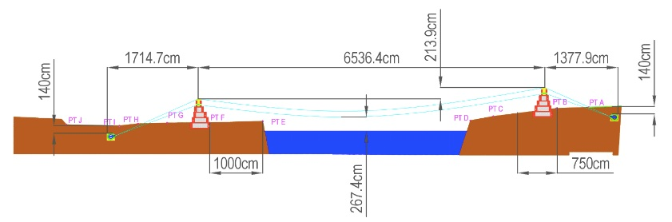

Each year, we work on a new bridge project over the course of the spring semester and summer. The project timeline below will take you through the steps of the bridge project, all the way from receiving the site information to the final bridge construction.
We receive the site information for the bridge we will be working on throughout the spring semester and summer. This includes the location, pictures of the site, survey information, and a survey profile that we can use to start work on the bridge design in January.

We start our work in January with JanFab, a week-long event held each year before classes start. It is a great time to get to know team members better and provides an opportunity to learn the initial bridge project considerations before diving into the semester. During this week, we work on the initial design and calculations for the bridge site.
Review Call 1 includes the general background of our site, geo-technical data and hydraulic conditions, initial design considerations, the bridge type decision, and a community engagement plan. It is the first of four review calls that we complete over the course of the semester and summer. These calls are attended by members of EIA, Bridge Corps, Ambassadors, Faculty Advisors, and Team Supervisors.

A travel team of 6-8 members is selected to travel to the bridge site during the summer.
There are 8 main roles for travel team members.
Our main work during this month is on Review Call 2 which focuses on the design aspect of the bridge build. It consists of the Site Overview, Design Process, Roles and Responsibilities, and Photos.
The Site Overview gives a summary of the building location and environment. It includes topographic surveys and site photos.
The Design Process consists of the site and building calculations. All the measurements are recorded here: design loads, material densities and strength values, wire rope specifications, geotechnical design values, geometric conformance, design checks and methods (anchors, foundation, tiers, towers, and wire rope), main span geometry, and left and right abutments.
The Roles and Responsibilities assigns tasks to specific groups and checks if the task has been completed.
Review Call 3 ensures that the chapter is prepared to safely manage their project in-country. During this call, the chapter will present their Construction and Safety Report. Teams will also present a draft of the “Project Planning MOU”, which outlines the support requested of EIA field staff by the university chapter.

The select group of 6-8 EIA members travels to the bridge site to complete the construction of the bridge. During this time, EIA members work closely with community members to learn more about the community and make a meaningful impact on their lives.

Following bridge construction and travel, EIA members are required to complete Review Call 4. This call is an opportunity for members to reflect on their experiences and what they learned during the bridge building process. Another purpose of this report is quality control and to ensure that all requirements have been met. Our team prepares a presentation including an as-built report, an incident report, a trip evaluation, and any lessons learned. It is important that we do this call, because it can be very educational for future team leaders. Also, it's a wonderful way to celebrate the work we’ve done over the past year as a team.